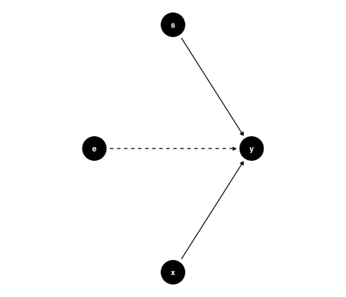
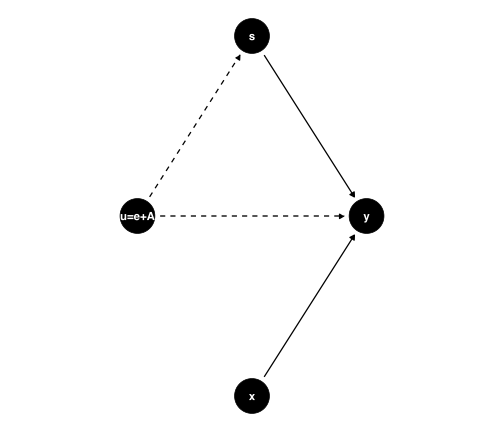
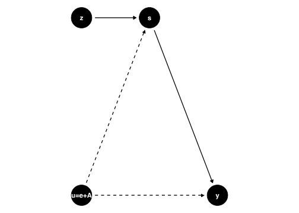
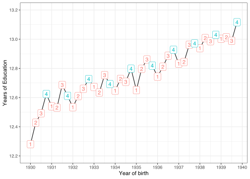
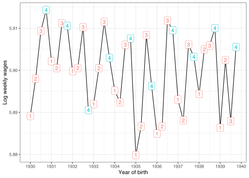

Status
What Did we Do Last Week?
We learned about John Snow's grand experiment in London 1850.
We used his story to motivate the IV estimator.
You took a quiz about some IV aspects.
Status
What Did we Do Last Week?
We learned about John Snow's grand experiment in London 1850.
We used his story to motivate the IV estimator.
You took a quiz about some IV aspects.
Today
We'll look at further IV applications.
We introduce an extension called Two Stage Least Squares.
We will use
Rto compute the estimates.Finally we'll talk about weak instruments.
Returns To Schooling
What's the causal impact of schooling on earnings?
Jacob Mincer was interested in this important question.
Here's his model:

Returns To Schooling
He found an estimate for of about 0.11,
11% earnings advantage for each additional year of education
Look at the DAG. Is that a good model? Well, why would it not be?
Ability Bias
We compare earnings of men with certain schooling and work experience
Is all else equal, after controlling for those?
Given ,
- Can we find differently diligent workers out there?
- Can we find differently able workers?
- Do family connections of workers vary?
Ability Bias
We compare earnings of men with certain schooling and work experience
Is all else equal, after controlling for those?
Given ,
- Can we find differently diligent workers out there?
- Can we find differently able workers?
- Do family connections of workers vary?
Yes, of course. So, all else is not equal at all.
That's an issue, because for OLS consistency we require the orthogonality assumption
Let's introduce ability explicitly.
Mincer with Unobserved Ability
In fact we have two unobservables: and .
Of course we can't tell them apart.
So we defined a new unobservable factor
Mincer with Unobserved Ability
In fact we have two unobservables: and .
Of course we can't tell them apart.
So we defined a new unobservable factor

Mincer with Unobserved Ability
In terms of an equation:
Sometimes, this does not matter, and the OLS bias is small.
But sometimes it does and we get it totally wrong! Example.
Angrist and Krueger (1991): Birthdate is as good as Random
Angrist and Krueger (AK91) is an influental study addressing ability bias.
Idea:
- construct an IV that encodes birth date of student.
- Child born just after cutoff date will start school later!
Suppose all children who reach the age of 6 by 31st of december 2021 are required to enroll in the first grade of school in september of that year (2021).
Angrist and Krueger (1991): Birthdate is as good as Random
Angrist and Krueger (AK91) is an influental study addressing ability bias.
Idea:
- construct an IV that encodes birth date of student.
- Child born just after cutoff date will start school later!
Suppose all children who reach the age of 6 by 31st of december 2021 are required to enroll in the first grade of school in september of that year (2021).
If born on 31/12/2015, they will be 5 years and 3/4 by the time they start school.
If born on 01/01/2016 they will be also and 3/4 years when they enter school (just one year later).
However, people can drop out of school legally on their 16-th birthday!
So, out of people who drop out, some got more schooling than others.
AK91 construct IV quarter of birth dummy: affects schooling, but not related to !
Birthdate Setup
Let's set up 2 children:
library(lubridate)born1 = as.Date("2015-12-31")born2 = as.Date("2016-01-01")school1 = as.Date("2021-09-01")school2 = as.Date("2022-09-01")How much days of school if they drop out on their 16-th birthday?
Birthdate Setup
Let's set up 2 children:
library(lubridate)born1 = as.Date("2015-12-31")born2 = as.Date("2016-01-01")school1 = as.Date("2021-09-01")school2 = as.Date("2022-09-01")How much days of school if they drop out on their 16-th birthday?
dropout1 = born1 %m+% years(16)dropout2 = born2 %m+% years(16)(schooldays1 = dropout1 - school1)## Time difference of 3773 days(schooldays2 = dropout2 - school2)## Time difference of 3409 daysAK91 IV setup
quarter of birth dummy : affects schooling, but not related to !
In particular: whether born in 4-th quarter or not.

AK91 Estimation: Two Stage Least Squares (2SLS)
AK91 allow us to introduce a widely used variation of our simple IV estimator: 2SLS
We estimate a first stage model which uses only exogenous variables (like ) to explain our endgenous regressor .
We then use the first stage model to predict values of in what is called the second stage or the reduced form model. Performing this procedure is supposed to take out any impact of in the correlation we observe in our data between and .
Conditions:
- Relevance of the IV:
- Independence (IV assignment as good as random):
- Exogeneity (our exclusion restriction):
Data on birth quarter and wages
Let's load the data and look at a quick summary
data("ak91", package = "masteringmetrics")# from the modelsummary packagedatasummary_skim(data.frame(ak91),histogram = TRUE)| Unique (#) | Missing (%) | Mean | SD | Min | Median | Max | ||
|---|---|---|---|---|---|---|---|---|
| lnw | 26732 | 0 | 5.9 | 0.7 | −2.3 | 6.0 | 10.5 | |
| s | 21 | 0 | 12.8 | 3.3 | 0.0 | 12.0 | 20.0 | |
| yob | 10 | 0 | 1934.6 | 2.9 | 1930.0 | 1935.0 | 1939.0 | |
| qob | 4 | 0 | 2.5 | 1.1 | 1.0 | 3.0 | 4.0 | |
| sob | 51 | 0 | 30.7 | 14.2 | 1.0 | 34.0 | 56.0 | |
| age | 40 | 0 | 45.0 | 2.9 | 40.2 | 45.0 | 50.0 |
AK91 Data Transformations
We want to create the
q4dummy which isTRUEif you are born in the 4th quarter.create
factorversions of quarter and year of birth.
ak91 <- mutate(ak91, qob_fct = factor(qob), q4 = as.integer(qob == "4"), yob_fct = factor(yob))# get mean wage by year/quarterak91_age <- ak91 %>% group_by(qob, yob) %>% summarise(lnw = mean(lnw), s = mean(s)) %>% mutate(q4 = (qob == 4))AK91 Figure 1: First Stage!
Let's reproduce AK91's first figure now on education as a function of quarter of birth!
ggplot(ak91_age, aes(x = yob + (qob - 1) / 4, y = s )) + geom_line() + geom_label(mapping = aes(label = qob, color = q4)) + guides(label = FALSE, color = FALSE) + scale_x_continuous("Year of birth", breaks = 1930:1940) + scale_y_continuous("Years of Education", breaks = seq(12.2, 13.2, by = 0.2), limits = c(12.2, 13.2)) + theme_bw()AK91 Figure 1: First Stage!
The numbers label mean education by quarter of birth groups.
The 4-th quarters did get more education in most years!
There is a general trend.

AK91 Figure 2: Impact of IV on outcome
What about earnings for those groups?
ggplot(ak91_age, aes(x = yob + (qob - 1) / 4, y = lnw)) + geom_line() + geom_label(mapping = aes(label = qob, color = q4)) + scale_x_continuous("Year of birth", breaks = 1930:1940) + scale_y_continuous("Log weekly wages") + guides(label = FALSE, color = FALSE) + theme_bw()AK91 Figure 2: Impact of IV on outcome
The 4-th quarters are among the high-earners by birth year.
In general, weekly wages seem to decline somewhat over time.

Running IV estimation in R
Several options (like always with
R! 😉)Will use the
iv_robustfunction from theestimatrpackage.Robust? Computes standard errors which are correcting for heteroskedasticity. Details here.
library(estimatr)# create a list of modelsmod <- list()# standard (biased!) OLSmod$ols <- lm(lnw ~ s, data = ak91)# IV: born in q4 is TRUE?# doing IV manually in 2 stages.mod[["1. stage"]] <- lm(s ~ q4, data = ak91)ak91$shat <- predict(mod[["1. stage"]]) mod[["2. stage"]] <- lm(lnw ~ shat, data = ak91)# run 2SLS# doing IV all in one go# notice the formula!# formula = y ~ x | zmod$`2SLS` <- iv_robust(lnw ~ s | q4, data = ak91, diagnostics = TRUE)Running IV estimation in R
Several options (like always with
R! 😉)Will use the
iv_robustfunction from theestimatrpackage.Robust? Computes standard errors which are correcting for heteroskedasticity. Details here.
Notice the
predictto get .
library(estimatr)# create a list of modelsmod <- list()# standard (biased!) OLSmod$ols <- lm(lnw ~ s, data = ak91)# IV: born in q4 is TRUE?# doing IV manually in 2 stages.mod[["1. stage"]] <- lm(s ~ q4, data = ak91)ak91$shat <- predict(mod[["1. stage"]])mod[["2. stage"]] <- lm(lnw ~ shat, data = ak91)# run 2SLS# doing IV all in one go# notice the formula!# formula = y ~ x | zmod$`2SLS` <- iv_robust(lnw ~ s | q4, data = ak91, diagnostics = TRUE)AK91 Results Table
| ols | 1. stage | 2. stage | 2SLS | |
|---|---|---|---|---|
| (Intercept) | 4.995*** | 12.747*** | 4.955*** | 4.955*** |
| (0.004) | (0.007) | (0.381) | (0.358) | |
| s | 0.071*** | 0.074** | ||
| (0.000) | (0.028) | |||
| q4 | 0.092*** | |||
| (0.013) | ||||
| shat | 0.074* | |||
| (0.030) | ||||
| R2 | 0.117 | 0.000 | 0.000 | 0.117 |
| RMSE | 0.64 | 3.28 | 0.68 | 0.64 |
| 1. Stage F: | 48.9904279657299 | |||
| + p < 0.1, * p < 0.05, ** p < 0.01, *** p < 0.001 | ||||
OLS likely downward biased (measurement error in schooling)
First Stage: IV
q4is statistically significant, but small effect: born in q4 has 0.092 years of educ. is 0%! But F-stat is large. 😅Second stage has same point estimate as
2SLSbut different std error (2. stage one is wrong)
Remember the F-Statistic?
- We encountered this before: it's useful to test restricted vs unrestricted models against each other.
Remember the F-Statistic?
We encountered this before: it's useful to test restricted vs unrestricted models against each other.
Here, we are interested whether our instruments are jointly significant. Of course, with only one IV, that's not more informative than the t-stat of that IV.
Remember the F-Statistic?
We encountered this before: it's useful to test restricted vs unrestricted models against each other.
Here, we are interested whether our instruments are jointly significant. Of course, with only one IV, that's not more informative than the t-stat of that IV.
This F-Stat compares the predictive power of the first stage with and without the IVs. If they have very similar predictive power, the F-stat will be low, and we will not be able to reject the H0 that our IVs are jointly insignificant in the first stage model. 😞
Additional Control Variables
We saw a clear time trend in education earlier.
There are also business-cycle fluctuations in earnings
We should somehow control for different time periods.
Also, we can use more than one IV! Here is how:
Additional Control Variables
# we keep adding to our `mod` list:mod$ols_yr <- update(mod$ols, . ~ . + yob_fct) # previous OLS model# add exogenous vars on both sides of the `|` !mod[["2SLS_yr"]] <- estimatr::iv_robust(lnw ~ s + yob_fct | q4 + yob_fct, data = ak91, diagnostics = TRUE ) # use all quarters as IVsmod[["2SLS_all"]] <- estimatr::iv_robust(lnw ~ s + yob_fct | qob_fct + yob_fct, data = ak91, diagnostics = TRUE )| ols | 1. stage | 2. stage | 2SLS | |
|---|---|---|---|---|
| (Intercept) | 4.995*** | 12.747*** | 4.955*** | 4.955*** |
| (0.004) | (0.007) | (0.381) | (0.358) | |
| s | 0.071*** | 0.074** | ||
| (0.000) | (0.028) | |||
| q4 | 0.092*** | |||
| (0.013) | ||||
| shat | 0.074* | |||
| (0.030) | ||||
| R2 | 0.117 | 0.000 | 0.000 | 0.117 |
| RMSE | 0.64 | 3.28 | 0.68 | 0.64 |
| 1. Stage F: | 48.9904279657299 | |||
| + p < 0.1, * p < 0.05, ** p < 0.01, *** p < 0.001 | ||||
Additional Control Variables
| ols | 2SLS | ols_yr | 2SLS_yr | 2SLS_all | |
|---|---|---|---|---|---|
| (Intercept) | 5.00*** | 4.96*** | 5.02*** | 4.97*** | 4.59*** |
| (0.00) | (0.36) | (0.01) | (0.35) | (0.25) | |
| s | 0.07*** | 0.07** | 0.07*** | 0.08** | 0.11*** |
| (0.00) | (0.03) | (0.00) | (0.03) | (0.02) | |
| R2 | 0.117 | 0.117 | 0.118 | 0.117 | 0.091 |
| RMSE | 0.64 | 0.64 | 0.64 | 0.64 | 0.65 |
| Instruments | none | Q4 | none | Q4 | All Quarters |
| Year of birth | no | no | yes | yes | yes |
| + p < 0.1, * p < 0.05, ** p < 0.01, *** p < 0.001 | |||||
Adding year controls...
- leaves OLS mostly unchanged
- slight increase in 2SLS estimate
Using all quarters as IV...
- Increases precision of 2SLS estimate a lot!
- Point estimate is 10.5% now!
AK91: Taking Stock - The Quarter of Birth (QOB) IV
This will produce consistent estimates if
- The IV predicts the endogenous regressor well.
- The IV is as good as random / independent of OVs.
- Can only impact outcome through schooling.
How does the QOB perform along those lines?
AK91: Taking Stock - The Quarter of Birth (QOB) IV
This will produce consistent estimates if
- The IV predicts the endogenous regressor well.
- The IV is as good as random / independent of OVs.
- Can only impact outcome through schooling.
How does the QOB perform along those lines?
Plot of first stage and high F-stat offer compelling evidence for relevance. ✅
Is QOB independent of, say, maternal characteristics? Birthdays are not really random - there are birth seasons for certain socioeconomic backgrounds. highest maternal schooling give birth in second quarter. (not in 4th! ✅)
Exclusion: What if the youngest kids (born in Q4!) are the disadvantaged ones early on, which has long-term negative impacts? That would mean ! Well, with QOB the youngest ones actually do better (more schooling and higher wage)! ✅